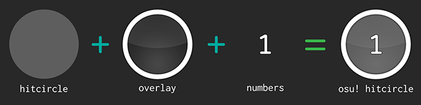
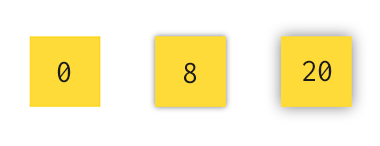
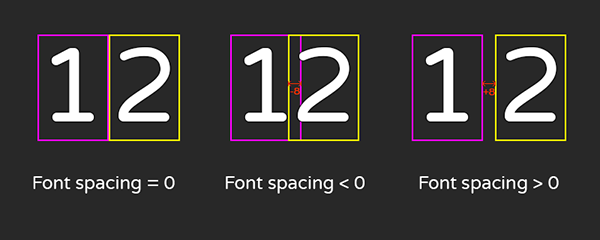

This documentation isn't updated.
The basis about skinning
General
In osu! you can full custom your game with skins, a folder with images and sounds. There is a skin.ini file to set the skin, for exemple hitcircles combo colors, names of some files, or some precise settings of the game.


This is the song selection but with 2 differents skins: at the left, the default skin, and at the right, a custom skin called
- Night03 -.
If you want to know how to create a skin, you have a tutorial here: https://tutorial.skinship.xyz/tutorial/introduction.
Hitcircle skinning

In osu!, you can custom hitcircles from standard mode. For that, you need 3 things:
- The hitcircle: it's the only tinted part of the osu! hitcircle. He's tinted depending the combo color. The file name is
hitcircle.png.
- The overlay: it's piece of the osu! hitcircle. He's always above the hitcircle. The file name is
hitcircleoverlay.png.
- The numbers: this is a group of 10 digits, from 0 to 9. osu! use theses files to display the number of the circle. By convension, the files are called
default-n.png, where n is the digit number (0-9).
So you need 12 files to custom a osu! hitcircle.
How to use the editor?
The editor allows you to create a hitcircle and export it. He automaticatly generate the files to put in your skins.
Editor controls
- Editor mode selector: This is here you can change what you edit (hitcircle, slider-heads, or numbers).
- Skin and author name: Put the name of your skin and your username. It's used in the skin.ini file.
- Preview: A preview of your hitcircle with all elements.
- Preview settings: You can set what is displayed in the preview.
- Combo colors: Choose the default combo of the skin.
- Editor controls: This is here you change settings to custom your hitcircle. Varies with the editor mode.
- Reset button: Reset the editor.
- skin.ini: Displays the content of the skin.ini file.
- Export settings & button: Configure and export your skin.
Colors and gradients
In this editor, you can change the color of elements. There is a lot of buttons but it's easy to use. You can choose one color but you can choose a gradient too.
- Type of gradient: define the type of gradient. There is 3 types of gradients:
None, Linear, and Radial.
- None: No gradient. The Color 1 will be used.
- Linear: Linear gradient. The Color 1 will be in a border of the circle, and the Color 2 in the opposite.
- Radial: Radial gradient. The Color 1 will be the color at the center (for a filled circle) or in the inner border (for border-only circles), and the Color 2 will be used at the outer border.
- Gradient direction: (Linear gradient only) set the direction of the gradient. The direction is in degrees, and you can put a value between -360 and 360.
- Color 1: A color have 2 things: a color picker and a opacity value, between 0 (transparant) and 100 (full visible).
- Color 2: (Linear and Radial gradients only) Same inputs than Color 1
Shadow and glow
In this editor, shadow and glow works the same. In some elements you can put a shadow/glow.
- Type of shadow: define the type of shadow/glow. There is 3 types of shadow/glow:
None, out, in/out.
- None: Don't apply a shadow/glow.
- Shadow/Glow out: Apply a shadow/glow outside of the circle.
- Shadow in/out: (Overlay only) Add a shadow in the inner and outer of the circle.
- Blur: Define the blur of the shadow/glow. (Values aren't accurate in the image, and don't have unit, but you know the idea.)

- Shadow/glow color: You can set the color and the opacity, between 0 (transparant) and 100 (full visible).
Preview and combo color
Display settings
The preview shows you what your circle looks like in the game (colored part + overlay + number). You can set the background, the color and the number displayed:
Custom colors
You can set 4 to 8 colors.
The advantage to use custom color is you can set the color of the hitcircle in the preview rapidly with the button 'Choose'.
Also, customs color change also the colors of the [Colours] section of the skin.ini. These colors are used to define combo colors when they aren't defined in the map or when you enable the option 'Ignore beatmap skin'.
Overlay
The overlay is the element above the colored part of the circle. He isn't tinted by the combo color. This is the hitcircleoverlay.png file.
Overlay properties
You can't change the size of the overlay (117).
- Border size: the border size of the overlay
-
3d effect: you can set a 3D effect for the overlay. It's a image to give some 3D to the overlay. He's automaticatly resized to fill the void of the overlay circle.
Sometimes, when you choose a 3D effect, he doesn't appears. To fix that, change a other setting (except 3d effect) and the 3D effectwill appears.
Overlay color
Changes the border color of the overlay. See colors and gradients.
Overlay shadow
Changes the shadow of the overlay. See shadow and glow.
With the shadow style shadow out, it's possible to see shadow inside of the circle with too low border size.
Colored part
This is the part who depends of the combo color. This is the hitcircle.png file.
Notes about the colors
In this part, the elements are tinted by the combo color. The blend mode is multiplicative, so it's recommended to use light colors.
Exmples with this tool which show you what color is displayed with the combo color applied:
Background
Changes the background color. The background is a circle who fill all of the circle, he's behind every element. See colors and gradients.
Circle glow
Add a colored glow around the circle. See shadow and glow.
Ring properties
Some skins, in addition to having a overlay and a colored background, have a colored ring. The esitor allows you to put one ring in your circle.
Example of 3 circles. Only the 1st, at the left have a colored ring (in blue here).
- Draw the ring: you need to check option if you want to display the ring.
- Ring size: diameter of the ring (border included).
- Ring border size: border size of the ring.
Ring color
Changes the color of the ring. See Colors and gradients.
Numbers
The numbers displays the number of the circle in the combo. You can choose a custom font for the numbers.
Font properties
You can define the font to use here.
Font position
This is here you can modify the vertical position of the numbers, and the distance between both of them. Numbers are centered-aligned with the circle.
- Monospaced font: if this option is checked, all numbers will have the same width. Do nothing with programming and monospace font, and with some fonts where digits have the same width (like Arial or Varela Round for example).
- Font spacing: define the spacing between 2 numbers.
0 is the default spacing. If you set a positive value, the numers will be more spaced, but you an also put a negative numbers, and numbers will be closer, and can be in contact.

- Vertical adjust: because each font have different Y alignements, so you can change the vertical position of the font.
0 is the default position. More the vertical adjust value is high, more the numers will be closer of the top border.
Font color
You can change the color of numbers. They aren't tinted by the combo color. See Colors and gradients.
Font shadow
You can add a shadow or a glow effect for numbers. See Shadow and glow.
The glow didn't affects the numbers position.
skin.ini
Below the custom colors, you have the skin.ini, a ini file to set the skin. More about the skin.ini here.
The editor generate for you the lines of the skin.ini useful for the hitcircle. He doesn't generate a entire skin.ini, but the minimum for the hitcircles are displayed correctly.
Lines generated by the editor
In [General] section:
- Name: The name of your skin.
- Author: The name of the creator of the skin.
- Version: Set to 2.5 (the latest) to have last features and to avoid some bugs.
- HitCircleOverlayAboveNumber: Set with the Numbers behind overlay option from Font properties, he decides if numbers must be behind the overlay or not.
The [Color] section:
- This is the RGB values of your custom color. See Custom colors for more information about that.
The [Fonts] section: this is here the font used by numbers of hitcircle are defined:
- HitCirclePrefix: All hitcircle numbers start by the same name. In this editor, it's default.
- HitCircleOverlap: The spacing between 2 digits. The font spacing and the font shadow blur affects this value.
Important things about skin.ini
If you have already a skin.ini, you don't need to take all lines of the skin.ini. The important lines you need to add (or to set) to avoid bug with correct values are:
VersionHitCircleOverlayAboveNumberHitCirclePrefixHitCircleOverlap
It's highly not recommended to create a skin without skin.ini.
Export the files
You can export the files using the button "Export as ZIP file". In this ZIP you will find:
hitcircle.pnghitcircleoverlay.pngdefault-n.png where n is a number between 0 and 9.- ...and maybe other things.
All elements are exported in their standard version and their @2x version, used in high resolution screens for better quality.
Export settings
- Export skin.ini: if this option is checked, the editor will generate and add the skin.ini file into the ZIP with all lines you can see in the editor.
- Export as slider circle: in osu!, you can set a different circle for slider heads and hitcircles. In this case, the
hitcircle.png and hitcircleoverlay.png will be renammed to change only slider end appearance. He's export only slider circles files. You will need to export a second time, with this option unchecked, to export the circles.
Numbers are common for slider heads and hitcircles.
If you want hitcircles and slider circles have the same appearance, you don't need this option: if there is only hitcircle.png and hitcircleoverlay.png in the skin folder, the slider heads will have the same appearance than hitcircle.
- Circles are slider end: In osu!, by default, the end of sliders have the same appearance than the hitcircle circle (even if sliders end have a different appearance than hitcircles). The editor will by default delete this circle by adding a transparent file called sliderendcircle.png, except if you check this option.
Example with the default skin and his slider-end circle.
Return to the top page